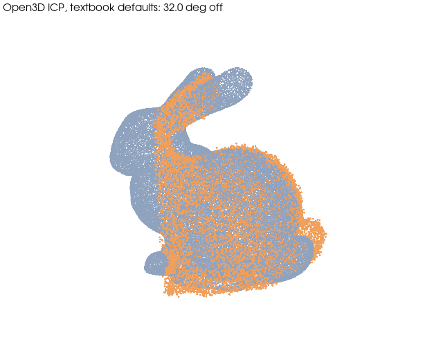
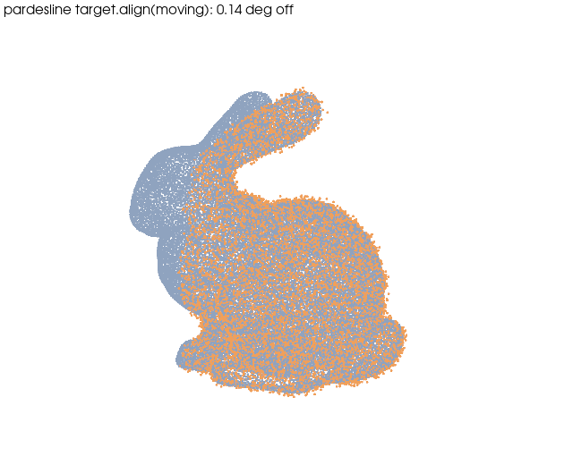

Open source · 3D vision & medical imaging · v0.3.0
Your ICP converged.
The part is 32° off.
What the Open3D tutorial call does on a real partial scan, measured, and the defaults that fix it. 73 algorithms, 43 datasets, one Python package.
The mistake
Trusting fitness = 0.98.
Fitness counts pairs inside a fixed 0.02 threshold. From the identity start, the 70 % overlap already satisfies it.
ICP never left its starting basin. Rotation error: 32°. The number said success.
Measured · bunny, 35°, 70 % overlap, 0.5 % noise, 5 draws
Three calls, same two clouds.
!
Tutorial ICP — 32.5° off (median)
!
Tutorial RANSAC, fixed 0.05 m voxel — 134.5° off
✓
Defaults derived from the data — 0.11° off, RMSE at the noise floor
Not a smarter algorithm. Every distance tied to the scan's own scale.
The fix
Tie every distance to the scan's scale.
1
voxel = 1.3 % of the bounding-box diagonal — right for a 15 cm bunny and a 15 m facade.
2
RANSAC on FPFH first, ICP second — a 35° start is outside ICP's basin.
3
Coarse to fine: 1.5 × voxel, then 0.4 × voxel — point-to-plane, so the 30 % of points with no counterpart stop pulling.
Write it down
Every default has a why.
371 parameters, 73 methods. Each one records the reason and the data it was checked on. A test fails if one is missing.
>>> pl.describe("registration.ransac_icp_pipeline")
voxel_size: float = 0.5 [0..0.9]
why: 0 (auto) = 1.3 % of the bounding-box diagonal: every other distance is a multiple of it, so one number adapts the whole pipeline to a 15 cm part or a 15 m facade.
distance_threshold_factor: float = 1.5 [0.5..3.0]
why: 1.5x the voxel for RANSAC inliers: tolerant to scanner noise, still rejects outliers.
Save this
Which registration, in 30 seconds
Clouds already within a few degrees? → ICP, point-to-plane
Unknown pose, large rotation? → RANSAC on FPFH, then ICP
The shape deforms (lungs, soft tissue)? → Coherent Point Drift
CT and MR of the same patient? → Mattes mutual information, rigid first
The trap: running ICP on unregistered clouds, then blaming the scanner. It is not the data. It is the stage you skipped.
…the one-line version
aligned = target.align(moving)

Textbook ICP · 32.0°

pardesline · 0.14°
43 public 3D and medical datasets in one line, with their licences: pl.load("rire_brain"). Open3D, PyVista and SimpleITK underneath. Apache-2.0, Python 3.10–3.13, an MCP server for AI agents.
Open source, Apache-2.0
Comment "REPO" and I'll send you the repository and the benchmark page.
I need contributors: a dataset manifest, a default you disagree with, a scan that breaks it.
Which default bit you last: the ICP threshold, or the Poisson depth?